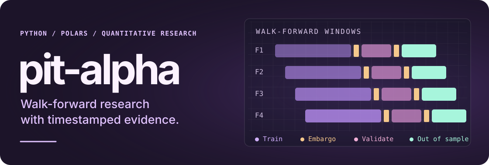

python / polars / quantitative research
Test your signal with the data you actually had.
A point-in-time factor research engine with purged walk-forward validation, fold-local fitting, and an auditable post-selection Sharpe check.

Align
Join Parquet observations by symbol and timestamp. Only revisions available at the decision time can enter features.
Validate
Purge overlapping labels, enforce an embargo, and fit preprocessing and models inside each fold. A future-price canary exercises the full path.
Evaluate
Inspect IC, Rank IC, ICIR, Sharpe, drawdown, turnover, and volatility regimes. Review the candidate search and adjusted holdout Sharpe check.
Quickstart
Python 3.12 · uv · Polars/Parquet input
git clone https://github.com/rishixgamer/pit-alpha.git
cd pit-alpha
uv sync --frozen --all-groups
uv run pit-alpha example --directory ./example-run
uv run pit-alpha run --config ./example-run/example.yamlThe seeded example writes Markdown and JSON reports to example-run/reports with fold-by-fold metrics, regime breakdowns, and selection evidence.
1.17 seconds for the reference run
The v1.0.0rc1 CI example used 156 MiB peak RSS to run five walk-forward folds across 24 synthetic symbols and write both reports.
Linux CI · 5,784 rows per input table · 5 candidate trials Candidate benchmark, reports, and wheel ↗